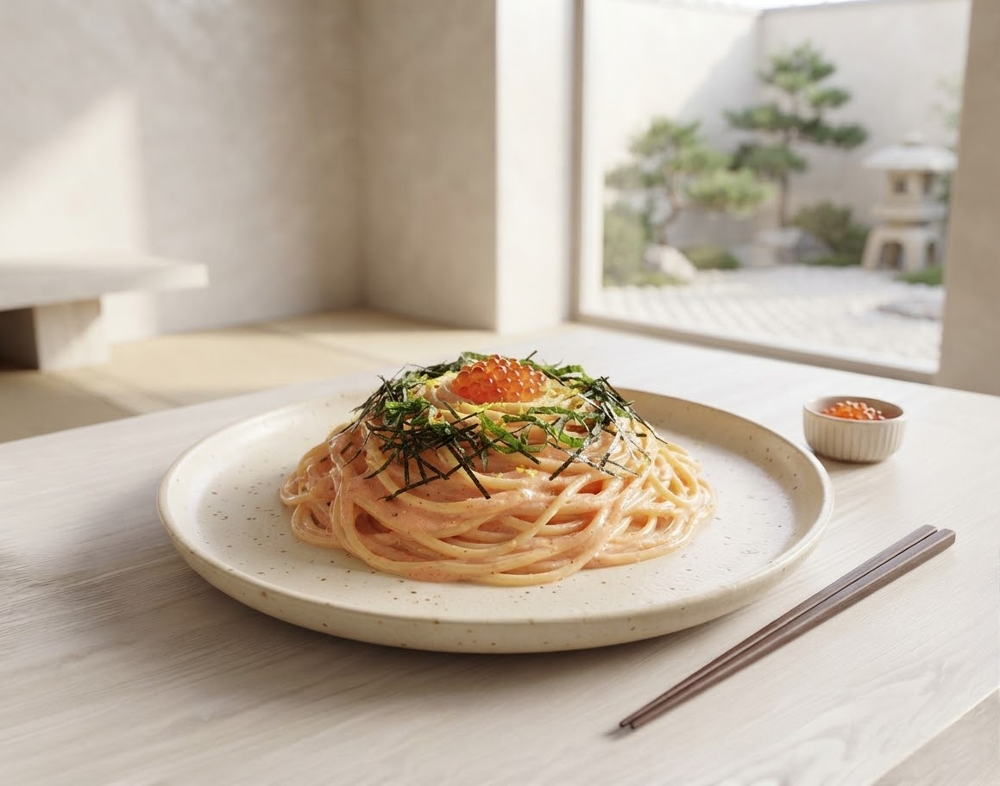
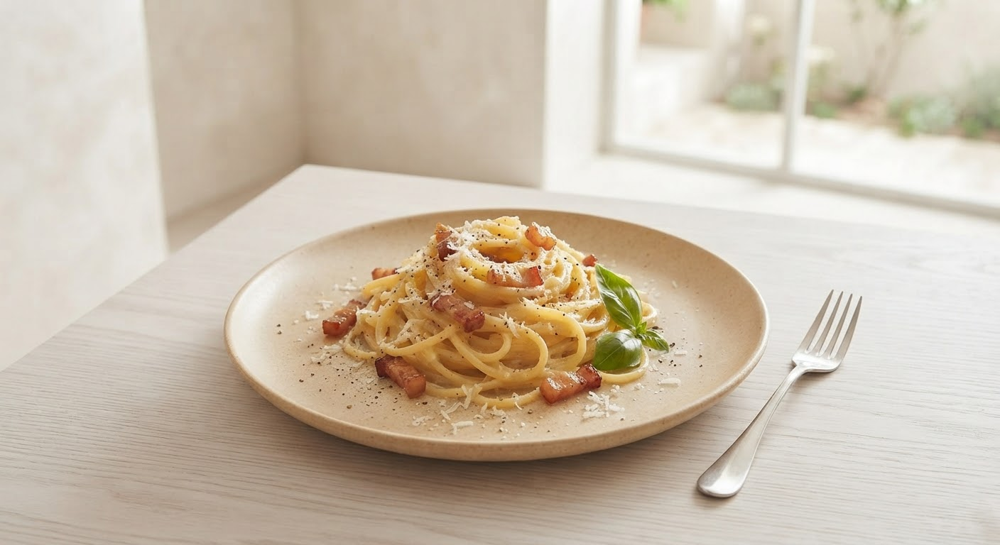
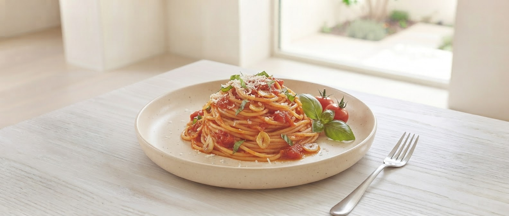

Morioka盛岡市月が丘
オープン前から行列ができる「ランパスメニュー」も数量限定で提供中。美味しいサラダとスープがセットで心もお腹も満たされます。

一度食べたらハマる「辛いカルボナーラ」や「ペペロンチーノ」など、他では味わえない独自の味を追求しています。
カウンター席完備で、お一人様でも安心。広くて明るい店内は、家族連れやデート、夜のバル利用にも最適です。

パスタランチは満足の食べ応え。ライスメニューがない代わりにおにぎりの持ち込みOKという温かい心遣いが自慢です。
Solution
週替わりのランチは飽きのボリューム。店名通り「ごゆっくり・お気軽に」を体現した温かな接客で、一度食べたらハマる独自配合のもちもちパスタをお届けします。
たっぷり
ボリューム満足度
大歓迎
お一人様・家族連れ
大好評の「週替わりランチ」の最新情報を、どこよりも早くお届け!さらに便利で楽しいコンテンツを現在準備中です。
Weekly Menu
「今週のパスタは何だろう?」がすぐわかる!毎週のランチラインナップや限定メニュー、シェフの気まぐれ仕込み風景をInstagramストーリーズ&LINE公式アカウントでいち早く発信します。
LINE Member Service
人気の数量限定ランパスメニューやランチセットの「売り切れ」を防止!LINEからワンタップでランチのお取り置き予約や、友達限定クーポンの配信を予定しています。
「大好きなお店です。どれを食べても美味しいです。お店の雰囲気もとても良く、1人でも入りやすいので何度も通っています。おすすめは辛いカルボナーラとペペロンチーノです。もちもちの麺で、1度食べたらハマること間違いなしです。」
盛岡市在住 / 30代女性
「日曜のランチで利用。2人で迷って、カルボナーラとアラビアータを注文。どちらもおいしかったです!おいしいサラダとスープが付いてきたのもうれしかったです。夜も飲みに行ってみたいと思いました。」
盛岡市在住 / カップル利用